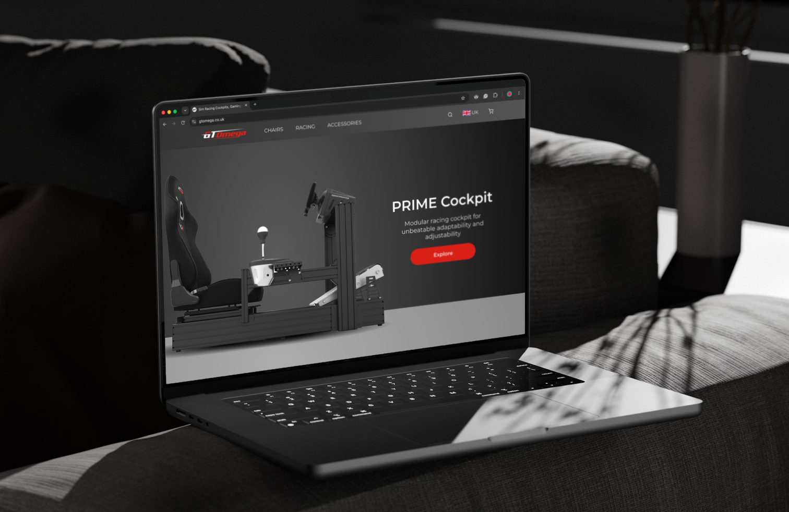

GT Omega is an established Scottish brand specialising in sim racing equipment and gaming chairs. As the company expanded its product range, its website had become increasingly difficult to navigate, leading to customer frustration, drop-offs throughout the purchasing journey, and an inconsistent brand experience.
Objectives:
Create a simpler, more intuitive shopping experience, improve navigation, strengthen brand consistency, and better showcase products and accessories to support customer decision-making and drive conversions.

A clear visual system of colour, typography, spacing and components created a more consistent and recognisable brand experience.


Outcomes
The redesign provided GT Omega with a modern, scalable foundation for its e-commerce experience. By simplifying navigation, strengthening the visual identity, and improving how products are presented, the designs support a more intuitive customer journey while allowing the team to roll out changes incrementally during quieter trading periods.